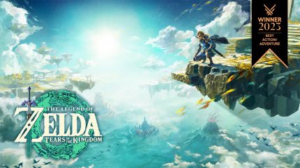
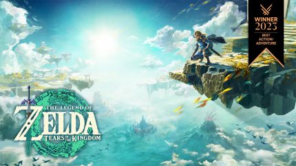

Japan, 1863. Ronin is a fast-paced, turn-based stealth action game that blends sleek combat mechanics with a rich narrative. Developed by Tomasz Waclawek, Ronin puts players in the shoes of a skilled assassin seeking revenge against a powerful corporate syndicate. Gameplay Overview: Ronin combines elements of platforming and tactical combat in a unique way. The game is divided into two key modes: stealth and action. In stealth mode, you move swiftly through buildings, grappling across rooftops, dodging security cameras, and sneaking past guards. Once enemies detect your presence, the game shifts into a turn-based mode where every move must be calculated. You can pause to plan your next step: whether to deflect bullets with your katana, use your grappling hook to reposition, or strike down enemies in one lethal blow. The game emphasizes both agility and foresight. Each encounter becomes a puzzle, where timing and positioning are crucial to outmaneuver your opponents. With a limited number of moves, one wrong decision can mean the difference between success and a swift demise. Key features: Tactical Combat: Turn-based combat that requires quick thinking and clever planning. Dodge enemy attacks, parry bullets, and strike with precision. Stealth Mastery: Use the environment to your advantage. Sneak past guards, avoid detection, and use shadows and rooftops to stay out of sight. Narrative-Driven Revenge: Follow a gripping story of betrayal and vengeance as you uncover the truth behind the conspiracy that destroyed your masters life. Stylish and Minimalistic Art Style: The game's clean, striking visuals complement the fast, fluid gameplay, with sharp animations and detailed environments. Challenging Boss Battles: Face off against five unique bosses, each with distinct abilities, forcing you to adapt your tactics and strategies.